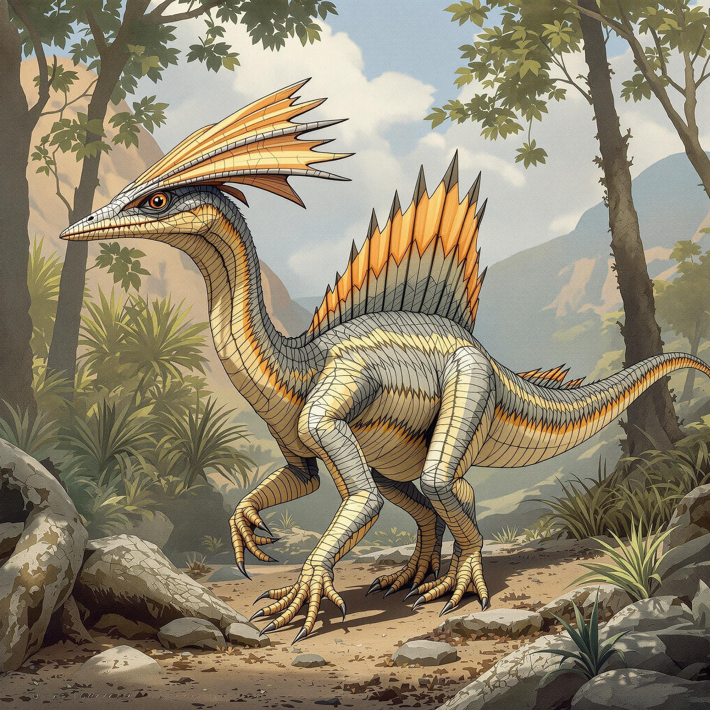
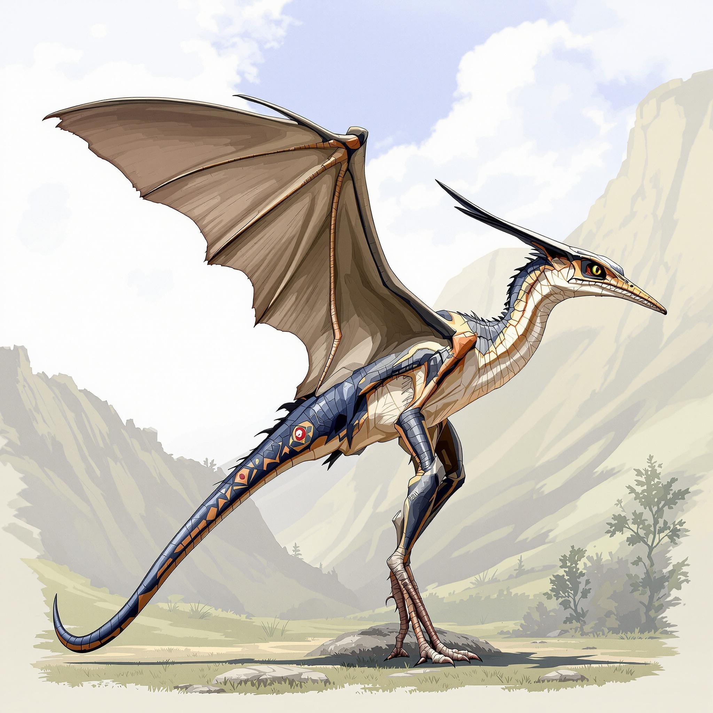
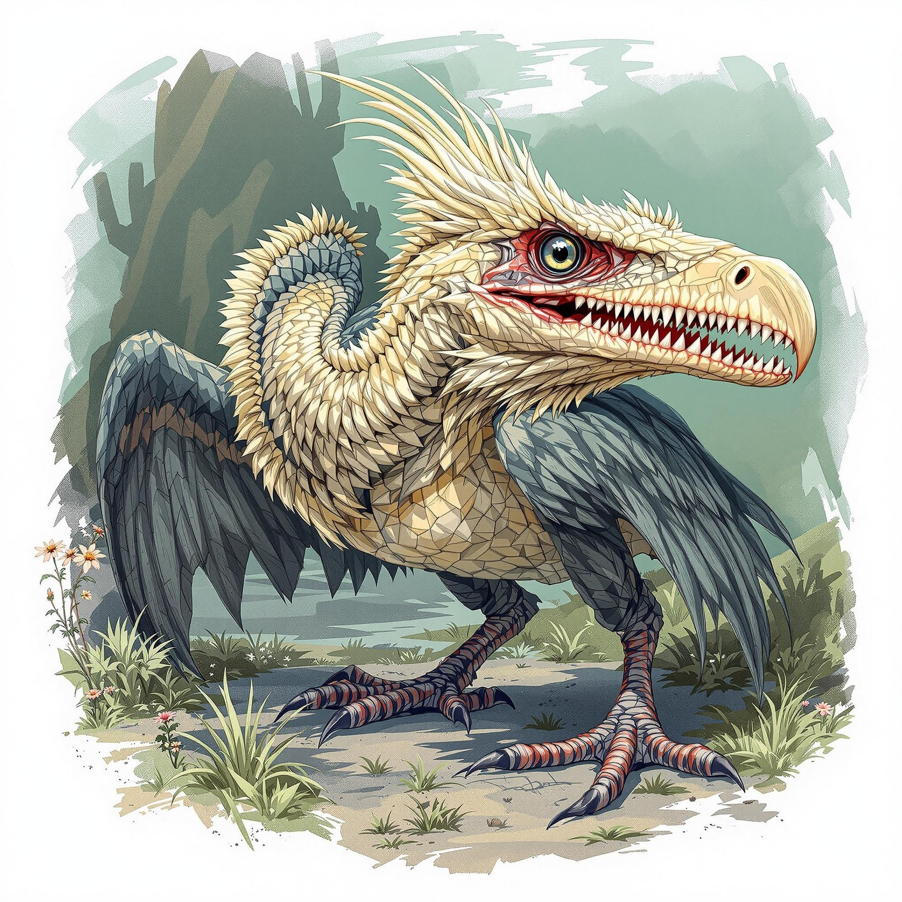
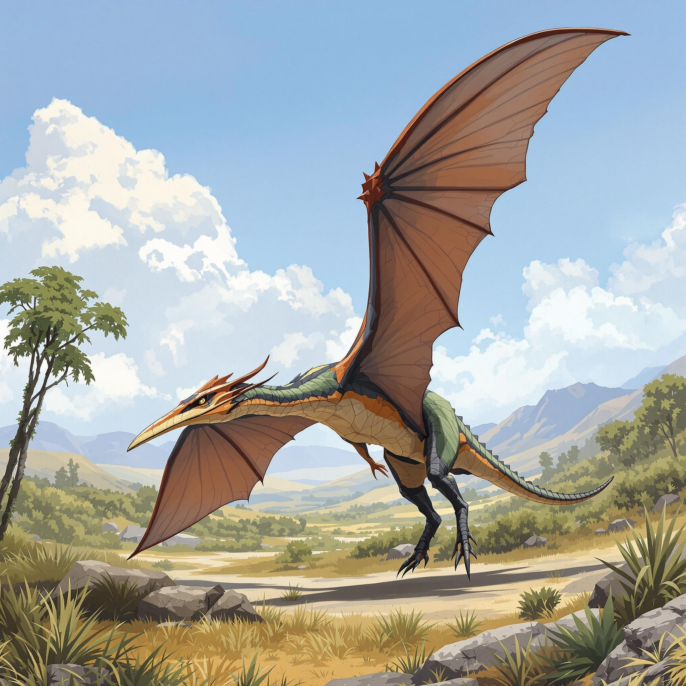

하늘의 지배자들
고대의 하늘을 지배했던 비행 파충류들의 세계
거대 익룡들

케찰코아틀루스
- 시대: 백악기 후기
- 날개 폭: 10-11m
- 무게: 70-250kg
- 특징: 역사상 가장 큰 비행 동물
기린 크기의 목을 가진 거대 익룡으로, 현존하는 어떤 새보다도 큰 비행 동물이었습니다.
비행 특성
- 상승 기류를 이용한 장거리 비행
- 지상에서도 효율적인 이동 가능
- 긴 목을 이용한 지상 사냥

프테라노돈
- 시대: 백악기 후기
- 날개 폭: 7m
- 무게: 20-30kg
- 특징: 뒤로 뻗은 두개골 돌기
가장 잘 알려진 익룡 중 하나로, 효율적인 비행 능력을 가졌습니다.
비행 특성
- 활강 비행에 최적화된 날개
- 균형을 위한 두개골 돌기
- 물고기 사냥에 특화된 부리

헤츠고프테릭스
- 시대: 쥐라기 후기
- 날개 폭: 8m
- 무게: 45kg
- 특징: 매우 긴 꼬리
긴 꼬리를 이용해 비행 중 방향 전환이 매우 자유로웠던 거대 익룡입니다.
비행 특성
- 정교한 비행 조종
- 긴 거리 비행
- 효율적인 사냥

시조새
- 시대: 쥐라기 후기
- 크기: 길이 0.5m
- 무게: 0.5-1kg
- 특징: 깃털과 날개를 가진 최초의 공룡
공룡과 조류의 중간 단계를 보여주는 중요한 화석입니다.
특이사항
- 현대 새의 조상
- 깃털과 비늘 모두 보유
- 제한적인 비행 능력

마이크로랩터
- 시대: 백악기 초기
- 크기: 길이 0.77m
- 무게: 1kg
- 특징: 네 개의 날개
네 개의 날개를 가진 작은 공룡으로, 나무 사이를 활공했습니다.
특이사항
- 앞다리와 뒷다리에 모두 날개 깃털
- 활공 비행 능력
- 나무 위 생활에 적응
조류형 공룡들

앵키오르니스
- 시대: 백악기 전기
- 크기: 길이 35cm
- 무게: 0.3kg
- 특징: 현대 새와 유사한 구조
현대 조류와 매우 유사한 특징을 가진 초기 조류형 공룡입니다.
특이사항
- 발달된 날개 깃털
- 나무 위 생활
- 곤충 사냥
중형 익룡들

타페자라
- 시대 백악기 초기 (1억 1천만 년 전)
- 날개 폭 5-6m
- 체중 20-25kg
- 특징 큰 머리 볏
독특한 머리 장식을 가진 대형 익룡입니다.
특이사항
- 화려한 머리 볏
- 강력한 턱근육
- 해안가 서식

닥틸로네무스
- 시대: 쥐라기 후기
- 날개 폭: 4m
- 무게: 10kg
- 특징: 긴 꼬리
긴 꼬리로 비행 중 방향 전환을 자유자재로 할 수 있었습니다.
비행 특성
- 꼬리를 이용한 정교한 조종
- 빠른 방향 전환
- 해안가 사냥에 특화

익수스
- 시대: 쥐라기 후기
- 날개 폭: 3m
- 무게: 8kg
- 특징: 물고기 잡이 전문가
날카로운 부리와 긴 목으로 물고기를 잡는데 특화되었습니다.
비행 특성
- 수면 위 저공비행
- 정확한 다이빙
- 효율적인 물고기 사냥

닥틸링쿠스
- 시대 쥐라기 후기 (1억 5천만 년 전)
- 날개 폭 4-5m
- 체중 10-15kg
- 특징 긴 부리와 날렵한 체형
물고기 사냥에 특화된 중형 익룡입니다.
특이사항
- 날카로운 이빨이 있는 긴 부리
- 효율적인 비행 능력
- 해안가 서식

익티오르니스
- 시대 백악기 후기 (8,700만 년 전)
- 날개 폭 50cm
- 체중 0.5-1kg
- 특징 현대 새와 유사한 구조
현대 바닷새의 조상격인 초기 조류입니다.
특이사항
- 이빨이 있는 부리
- 물고기 사냥 전문가
- 현대 갈매기와 유사한 생활방식

앵구안테라
- 시대 백악기 초기 (1억 2천만 년 전)
- 날개 폭 4m
- 체중 9-12kg
- 특징 톱니 모양의 부리
독특한 부리 구조를 가진 중형 익룡입니다.
특이사항
- 물고기를 걸러먹는 부리 구조
- 연안 지역 서식
- 효율적인 활공 능력
초기 익룡들

안구안테라
- 시대: 쥐라기 중기
- 날개 폭: 1.5m
- 무게: 3kg
- 특징: 원시적인 날개 구조
초기 익룡의 특징을 잘 보여주는 중요한 화석입니다.
비행 특성
- 짧은 거리 비행
- 나무 사이 이동
- 초기 비행 적응

에우디모르포돈
- 시대: 트라이아스기 후기
- 날개 폭: 1m
- 무게: 2kg
- 특징: 가장 오래된 익룡 중 하나
최초의 비행 파충류 중 하나로, 원시적인 비행 능력을 보여줍니다.
비행 특성
- 기본적인 활강 비행
- 짧은 거리 이동
- 나무 위 생활

페트라로돈
- 시대: 백악기 후기
- 날개 폭: 2.5m
- 무게: 5kg
- 특징: 작은 이빨과 날카로운 부리
작지만 효율적인 비행 능력을 가진 익룡이었습니다.
비행 특성
- 민첩한 비행
- 정확한 사냥
- 해안가 서식